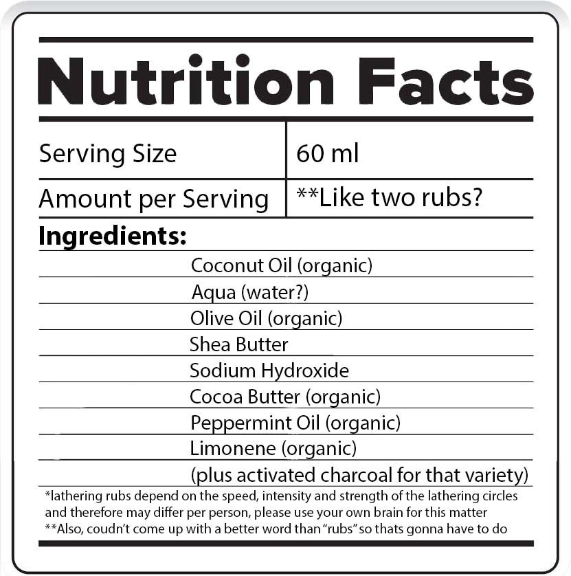

Toothsoap
- Wilf Kenyon
- 15th Dec 2021
- bathroom, hygene, toothsoap
Author:
Created:
Tags:

🌎Introduction🌎
What is toothsoap?
Yes, you saw that correctly, took me a few re-reads. This is a cool alternative to tubed toothpaste. Well I guess it still comes in a tube. With this trendy badboy, you can lather your toothbrush up like a traditional soap bar, to brush your teeth (hence the inventive name).
🌎Practical Guide🌎
How do you use it?
- Run your brush under some cold water (unless you like it warm?)
- Get your toothsoap and rub the wet bristles over the stick till you see a lather
- Brush your teeth like normal
Made by who or whom?
Tis made by the fantastic Georganics, a UK (Brighton) based company which produce a variety of mouth hygene products.
When & where did ya buy it?
I snagged this guy on the 18th of September 2021 through the green turtle website for £8.90 (about US $12).
How long does it last?
Well... i've had this guy for exactly 109 days, and I must say that I am impressed. I had hoped to be using the toothsoap while travelling, but this was cancelled due to covid, but is still handy at home! Some people report it lasting from 12 months all the way to 18 months!
At first, just like many toothpastes I was using a heavy amount, (in comparsion to what I use now) to make sure I was getting enough on my teeth while brushing. But I soon realised that only a small amount was enough to lather up and do good! I now just move my toothbrush around the stick about twice till I see it lathered on the brush.
Tips & Tricks?
I was today years old when I realised you could push the bottom of the tube to raise it up so that when the upper parts get exhausted, you can still use the tube without taking the toothsoap out. This wasn't described on the website so I am fully amazed right now!
Does it do as intended?
Yes! my teeth feel proper clean after being brushed.
I've noticed my gums bleeding much less when brushing and flossing.
Plus, I get barely any build up of plaque on my teeth, of course that could be because of a variety of things though.
I'd say that it may be causing some of my teeth to become slightly translucent, something I hadn't noticed before using this toothpaste. This is apparently caused my hypomineralisation (loss of minerals in the tooth surface) which may be down to diet of acidy drinks like fruit juices, but I am questioning whether it is the toothsoap? I am not sure.
Any Downsides?
Firstly, the taste is not amazing. I have the peppermint tasting one, and despite it smelling great and reminding me of Kendal Mint Cake (for my English readers) it doesn't taste minty. I think it tastes bland a relatively unpleasant. But i'd say this shouldn't be a reason not to buy it.
Next, I find the fact that it isn't fixed in the tube slightly annoying and has fallen out on occassion, not something you want when in a bathroom. I have not had any major disasters but i've had to clean it from hairs a few times.
🌎Let's get down to the science🌎
Fluoride
Fluoride is the first thing that comes to mind when I think of “Toothpaste” and I reckon I'm not the only one. It has been talked about for ages whether we should be putting it in our toothpastes, this is a general summary of the scientific chatter:
It is naturally occurring all through nature, in our soils, animals, water and more. It has been added to toothpaste since its discovery for reducing tooth decay in naturally high content water. It is now widely accepted that fluoride causes the mineralisation of the teeth; a hardened layer over the tooth to prevent bacteria reaching them and causing decay.
There can be serious effects of being exposed to too much fluoride, for instance if accidently swallowed (especially with children). These effects can be acute (short-term) like nausea and vomiting to chronic (long-term) like dental and skeletal fluorosis. Dental fluorosis prevents enamel from fully developing (which also protects the teeth from decay) causing white to brown coloration of the enamel on the teeth and weakening of the bones for skeletal fluorosis.
So, what does Georganic's toothsoap have to do with this? Simply, it refrains from using fluoride to avoid any bickering: “With all the controversy surrounding fluoride, to us the solution seems clear. Let’s find a safe, natural alternative to prevent tooth decay!”. Instead it uses natural ingredients to ultimately perform the same task of preventing tooth decay.
Recently in the UK, it was announced that fluoride will be increased in many water supplies to prevent tooth decay hopitalisation. Maybe have a look into this to see if you are affected and consider if the fluoride in water and toothpaste together is too much?
Coconut (Malaysia) & Olive Oil
Oils have been used traditionally, specifically in India to perform an act called “oil pulling”. In this activity, a person gets a tablespoon of oil, puts it in their mouth and swishes it around for about 20 minutes before spitting it out and washing their mouth. Coconut oil is a typical example oil used, and olive oil is too, but less so.
From oil pulling research and in toothpastes, coconut oil has shown to provide many benefits for oral hygene. This mainly includes reducing plaque sticking to the teeth, building up and its general minimisation. Furthermore, it is known to be antimicrobial, reduce mouth sores and create teeth whitening, while maintaining a pleasant taste!
Less research seems to have been conducted on olive oil, being more refined than its coconut counterpart. However, it has been seen to have antimicrobial effects, boosting the immune system whilst whilst also preventing plaque formation.
However, much of the research has been conducted by using oil pulling techniques, and this toothsoap is only meant to be used for 2 minutes, not 20 like recommended in oil pulling. Could this mean that the common effects listed may not be as effective in such a short time? Would you like to be swishing your toothpaste around for 20 minutes?
Sodium Hydroxide
This is a chemical utilised in "Saponification". In this process an oil (the coconut and olive oil) reacts with the sodium hydroxide to create the soap.
According to Georganics, the sodium hydroxide is noted as an ingredient to meet legal requirements for the manufacturing. However, there is no trace of this chemical which is present in the final consumer product. So despite not being listed as natural, there should be no health risks by being in contact with the product.
Cocoa Butter
Also known as theobroma oil, this is derived from the Cocoa Bean (choccy). It is known to contain small amounts of Theobromine and Caffine. Initial studies show theobromine to have hardening effects for protective tooth enamel and can be antimicrobial.
One study (9) states that cocoa butter itself has the ability to protect teeth by resisting damage from sugars. However, research on this topic seems to be quite rare.
Lastly, Georganics state that this ingredient acts as a "lubricant", their words not mine. Yes, I can be childish... But also it helps the toothsoap mix with the water so that it can better perform when brushing.
Shea Butter (Senegal)
Extracted from the nuts of a Shea Tree found mainly in Sub-Saharan Africa, Shea Butter has traditionally been used for its cooking and medicinal properties. Regarding its use in oral science, my research found very little on its dental hygene properties; only that it's roots are chewed on to clean teeth. Nonetheless, I contacted Georganics, and they claim it has moisturising properties for the gums, specifically for "gum conditioning" which apparently helps eases the introduction of new tooth dentures into the gums.
Also, Georganics stated that it helps control the texture of the toothsoap.
Peppermint Oil
Derived from a the medicinal peppermint flowering plant, the oil's main involvement with dental health is concerning its anti-microbial effects. Specifically some studies have found a significant effect upon streptoccus mutans, a bacteria that typically causes tooth decay.
But, from what I can grasp, Georganics use it mainly for the taste.
Limonene
This hydrocarbon derived from citrus oils. It has been shown in several experimental studies that it could have interesting effects on limiting tooth decay and bleaching teeth whiter in combination with other substances.
The Packaging (Switzerland & UK)
The packaging for traditional toothpastes was designed back in 1892, and has barely changed since to adapt to sustainability. This attributes these tubes with bad design for the circular economy. They are difficult to recycle to the mixes of plastic and aluminium in their design, two useful materials which are hard to separate, meaning they must usually be thrown away in the general waste. Furthermore, it is a pain to clean the inside of a toothpaste tube as you normally would with other items to recycle.
Nevertheless, there are possible options for recycling toothpaste tubes! Some local authorities or organisations may use "the enval plant" which separates the plastic and aluminium using a form of pyrolysis for recycling. Or another alternative is using terracycle, a great company which aims to recycle EVERYTHING. They run a program in partnership with Colgate and Hello organisations, in which you can drop off any toothpaste tubes at drop off points found here.
The packaging for this product is a simple cardboard tube. It is made from kraft paper, and thats it, no plastic at all! Kraft is a popular strong paper for packaging like paper shopping bags which retain its natural brown colour but can also be bleached white and coloured. Furthermore, the ink is printed used "vegetable pigments", which is naturally occuring and also biodegradable.
This means that after finally finishing with the bar of toothsoap, you can either chuck it in your recycling bin to have the paper hopefully remade into new products. Or you can put it in your food bin to be sent off for either composting, fertiliser or generating electricity, dependent on your local authorities' choice. Lastly, you can chuck it in your compost bin or heap if you have one! This will allow the natural nutrients to break down once more to be made into compost to be used for a veggie patch, flower bed and much more!
🌎Trust or Bust?🌎
| Environmental: |
|
| Accessibility: |
|
| Healthiness: |
|
| Pleasantness: |
|
| Convienience: |
|
| Overall: |
|
🌎Sources🌎
- Colgate, Translucent Teeth: Three Things To Know
- Ullah, R., Zafar, M.S., Shahani, N. Potential fluoride toxicity from oral medicaments: A review
- Wong, M.C.M., Clarkson, J., Glenny, A.M., Lo, E.C.M., Marinho, V.C.C., Tsang, B.W.K., Walsh, T., Worthington, H.v., Cochrane Reviews on the benefits/Risks of fluoride toothpaste
- Georganics, Fluoride, the facts
- ITV News,Fluoride to be added to UK drinking water to cut tooth decay, chief medical officers say
- Woolley, J., Gibbons, T., Patel, K., Sacco, R., The effect of oil pulling with coconut oil to improve dental hygiene and oral health: A systematic review
- Shanbhang, V.K.L., Oil pulling for maintaining oral hygiene – A review
- Dutra, H., Barbosa, I., Camara, J.V., Pereira, G., Influence of brushing with natural dentifrices on color change: In vitro study
- Rajab, S.H., Al-Hindi, L.K., Elmarsafy, S.M., Evaluation of Coconut Oil Pulling vs. Whitening Mouthwash as Home Teeth Whitening Methods
- Nasution, A, I., Zawil, C., The comparison of enamel hardness between fluoride and theobromine application
- Lakshmi, A., Vishnurekha, C., Baghkomeh, P,N., Effect of theobromine in antimicrobial activity: An in vitro study
- Ma, L., Chen, J., Han, H., Liu, P., Wang, H., Lin, S., Zhang. Q., Lu, D. & Zhang, X., Effects of lemon essential oil and limonene on the progress of early caries: An in vitro study
- Lertsukprasert, N., & Locharoenrat, K., Efficiency of tooth bleaching agent on staining and discoloration characteristics of nicotine stained dental enamel model
- Liu, Y., Liu, P., Wang, L., Shi, Y., Chen, J., Wang, H. & Zhang., Inhibitory effects of citrus lemon oil and limonene on Streptococcus sobrinus – Induced dental caries in rats
- Mojtahedi, N., Golestannejad, Z., Shahi, H.Y., Bahrani, M., Comparison of antibacterial activity from essential oils of fennel, mint and peppermint against streptococcus mutants.
- Park, C.M. & Yoon, H.S., Anti-bacterial effects of lavender and peppermint oils of Streptococcus mutans.
- Fayed, M.A., Mentha Piperita. - A promising dental care herb mainly against cariogenic bacteria
- Malea, A., Tzotzis, A., Manavis, A., Kyratsis, P., Innovative and sustainable toothpaste packaging design